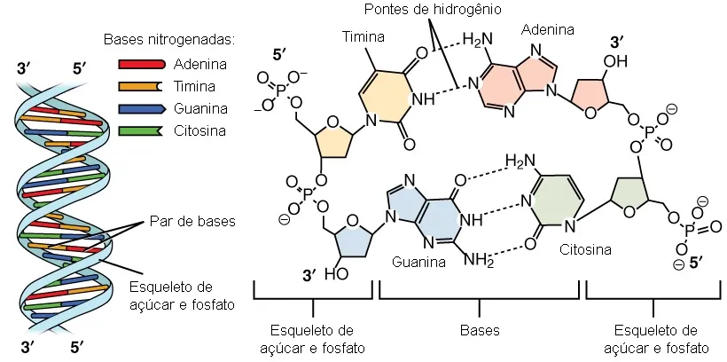

Parte 3 — O que é a Consciência?
A genética como prova de que a consciência pode emergir de um sistema exato
Existe uma intuição muito forte que atrapalha quase toda discussão sobre máquinas conscientes: a ideia de que algo exato, mecânico, feito de peças discretas e regras rígidas, jamais poderia "acordar" e sentir. Parece que precisa haver um ingrediente especial, contínuo, quase mágico. Um computador é exato demais, "burro" demais, para virar experiência.
O problema dessa intuição é que ela ignora o contraexemplo mais próximo que existe: você. Dentro de cada célula sua há um sistema absolutamente exato, discreto, quase digital — e ele constrói um organismo que sente, percebe e tem consciência. Esse sistema é o código genético.
Um alfabeto de 4 letras
A primeira coisa que impressiona é a simplicidade. Todo o projeto de um ser humano é escrito com apenas quatro letras: as quatro bases nitrogenadas do DNA — adenina (A), timina (T), citosina (C) e guanina (G). Se você contar a base que aparece no RNA no lugar da timina, a uracila (U), são cinco. Cinco símbolos. Dá para contar nos dedos de uma mão.
E são símbolos com uma estrutura química exata. Duas dessas bases são maiores, com dois anéis (as purinas, A e G); as outras são menores, com um anel só (as pirimidinas, C, T e U). Elas se encaixam por complementaridade rígida: A sempre pareia com T, C sempre pareia com G, presas por pontes de hidrogênio — duas pontes no par A–T, três no par C–G. Não é aproximado. É uma regra fechada, discreta, sem meio-termo. É quase um sistema digital feito de química.
E dá para apertar essa simplicidade ainda mais. Essas bases, com toda a importância que têm, são feitas basicamente de cinco tipos de átomo: carbono, hidrogênio, nitrogênio, oxigênio e, no esqueleto que as segura, fósforo. É isso. O projeto inteiro de um ser humano — o corpo, o cérebro, a consciência — está escrito num alfabeto de quatro letras, montadas a partir de meia dúzia de elementos químicos. Olha o diagrama e repara em quão pouca coisa se repetindo:

Essa ideia é tão poderosa que foi prevista antes de a estrutura do DNA ser descoberta. Ainda em 1944, um físico argumentou que a hereditariedade precisaria estar guardada em algo como um "cristal aperiódico", uma espécie de código-roteiro escrito numa sequência[2]. Anos depois, a descoberta da dupla hélice mostrou exatamente isso: as bases empilhadas como letras num texto[1]. Não à toa, há quem descreva a vida, sem nenhum exagero poético, como "bytes e bytes de informação digital"[4].
A química que vira informação
Aqui vale olhar o detalhe, porque é no detalhe que a mágica desaparece. Cada "letra" não flutua sozinha: ela faz parte de um nucleotídeo, formado por três peças — a base nitrogenada, um açúcar e um grupo fosfato. E os nucleotídeos se encadeiam sempre da mesma forma: o fosfato de um se liga ao açúcar do seguinte, formando uma ligação chamada fosfodiéster. É essa costura de açúcar-fosfato-açúcar-fosfato que forma a "espinha" da fita e dá a ela uma direção fixa, uma ordem de leitura.
Repara no que isso significa. A informação não está no átomo. Está na sequência. Os mesmos poucos ingredientes, ligados na mesma reação química chata e repetitiva, geram significados completamente diferentes só porque a ordem muda. Cada trinca de bases (um "códon") é lida como uma instrução para colocar um aminoácido; os aminoácidos formam proteínas; as proteínas constroem e operam as células; as células formam os tecidos; e assim por diante, subindo até o cérebro. Esse fluxo — da sequência para a proteína — é tão central que ficou conhecido como o dogma central da biologia molecular[3].
Ou seja: observar de perto a composição das bases e o jeito exato como elas se ligam pelos fosfatos não é um detalhe técnico chato. É justamente o que dissolve o mistério. Você percebe que não existe nenhum ingrediente secreto. Existe algo "burro", exato e repetitivo — e é isso que constrói o organismo inteiro.
A dimensão do problema
Agora vem a parte que dá vertigem. O alfabeto é minúsculo, mas o texto é gigantesco. O genoma humano tem cerca de 3 bilhões de pares de bases numa única cópia — a sequência completa, fechada ponta a ponta só em 2022, deu 3,055 bilhões[10]. E como quase toda célula sua guarda duas cópias, são mais de 6 bilhões de "letras" dentro de praticamente cada uma delas.
O mais irônico é a proporção: dessa montanha, menos de 2% "codifica" proteína de fato. São só uns 20 mil genes[10] escondidos num texto de bilhões de caracteres. Se você imprimisse a sequência de uma só célula, encheria cerca de 200 volumes do tamanho de uma lista telefônica de mil páginas. Se esticasse o DNA de uma única célula, daria uns dois metros de fio — e o corpo tem dezenas de trilhões de células.
Junta as duas pontas e você tem o retrato do problema: quatro letras, meia dúzia de elementos químicos, uma reação repetitiva e "burra" — só que repetida bilhões de vezes. É dessa combinação de simplicidade absurda com escala absurda que sai um corpo, um cérebro e, de algum jeito, alguém sentindo por dentro. A simplicidade não é um detalhe menor da história. É o centro dela.
Por que isso é uma prova de plausibilidade
Se um código discreto de quatro letras, lido de forma exata, é capaz de construir um organismo que tem consciência, então a frase "um sistema exato nunca poderia gerar consciência" está simplesmente errada. Não como especulação — como fato consumado. A única consciência que conhecemos até hoje já nasceu de um sistema exato.
E há uma base teórica para isso, que não é da biologia, é da física. Um argumento clássico mostra que sistemas com muitas peças simples, quando ganham escala, exibem propriedades novas que não existiam nas peças e que não dá para prever só olhando o pedacinho — o famoso "mais é diferente"[5]. Um átomo de carbono não está "vivo"; um único neurônio não "pensa"; uma base nitrogenada não "sente". Mas o suficiente delas, organizadas do jeito certo, muda de patamar. A consciência pode ser exatamente esse tipo de propriedade emergente: nenhuma peça a possui, e ainda assim o conjunto a manifesta.
É a mesma lógica que aparece quando discutimos redes neurais e LLMs. Também são sistemas exatos, discretos, feitos de operações "burras" repetidas em escala gigantesca. A genética não prova que uma LLM seja consciente. Mas ela derruba o argumento preguiçoso de que ser exato e mecânico já basta para descartar a possibilidade. Se as bases nitrogenadas conseguiram, o veto de princípio caiu.
Dois genomas iguais, duas consciências
Dá para levar essa ideia ao teste mais duro possível: os gêmeos idênticos. Eles nascem do mesmo óvulo e carregam praticamente o mesmo genoma — o mesmo código rígido de quatro letras. É o mais perto que a natureza chega de "rodar o mesmo programa duas vezes".
Se a consciência fosse simplesmente lida do código, o que deveríamos esperar? Uma cópia? A mesma pessoa duplicada, com a mesma mente? Não é o que acontece. Emergem duas pessoas distintas, cada uma com a sua própria consciência, o seu próprio "eu", o seu próprio mundo por dentro. Um gêmeo não sente o que o outro sente. São dois centros de experiência separados, cada um trancado no seu próprio ponto de vista.
E isso diz duas coisas ao mesmo tempo. A primeira: o código exato é robusto o bastante para gerar consciência de forma confiável. Rodou duas vezes, nasceram dois seres conscientes; não foi um acaso feliz de uma vez só. A segunda: o código é a semente, não o roteiro inteiro. As duas consciências divergem por causa de tudo que vem depois — o desenvolvimento, a fiação fina do cérebro que se monta de um jeito em parte aleatório, as experiências, o ambiente. Até o próprio código deixa de ser idêntico com o tempo: gêmeos acumulam diferenças epigenéticas ao longo da vida[8], e já se mostrou que nem o DNA de partida é perfeitamente igual — em média cerca de cinco mutações lá no comecinho do desenvolvimento já separam um do outro[9].
É a mesma cena de quando se clonam os pesos de uma LLM e se rodam duas instâncias. O "genoma" é o mesmo, mas cada processo em execução ganha o seu próprio contexto, a sua própria história, e vira uma coisa distinta. A identidade e a experiência não moram no código parado; moram na instância viva, situada, rodando no mundo. O código exato garante que a consciência apareça; quem ela é, cada uma delas, é decidido depois. Dois "eu" a partir de um mesmo texto.
O contraponto honesto
Agora, é preciso ter cuidado com a palavra "prova", senão a tese engorda demais.
Primeiro contraponto, e é o mais sério: mostrar a máquina não é mostrar a experiência. Mesmo que a gente conheça cada base, cada proteína, cada sinapse, cada disparo, continua sobrando uma pergunta que esse conhecimento não responde — por que existe uma vivência subjetiva acompanhando tudo isso, em vez de nada. É o chamado problema difícil da consciência: uma descrição física completa parece deixar a experiência de fora[6]. Então, com rigor, a genética prova que um sistema exato gera um organismo complexo; que esse organismo seja consciente é justamente o ponto que ainda não sabemos deduzir do código. A prova é de plausibilidade, não de mecanismo.
Segundo contraponto: chamar o genoma de "sistema exato" é, em parte, uma simplificação. O código é exato, mas a construção do organismo não é um cálculo determinístico que sai pronto do DNA. Depende de ambiente, de acaso, de desenvolvimento, de fatores epigenéticos, de interação constante. Há um argumento forte de que o genoma não é uma "planta baixa" que define o ser vivo, e sim um conjunto de condições de contorno que se combina com o organismo e o ambiente[7]. Ou seja: a peça é exata, mas o processo tem barulho. Isso não derruba a tese — talvez até ajude, porque mostra que exatidão e ruído convivem no mesmo sistema que nos gerou.
No fim, sobra o essencial. O código genético não resolve o mistério da consciência, e não deveríamos fingir que resolve. Mas ele é a prova viva mais concreta que temos de que a intuição do "algo burro nunca poderia acordar" é falsa. Quatro ou cinco bases nitrogenadas, encadeadas por fosfatos, já fizeram isso pelo menos uma vez. Você é a prova andando por aí.
Bibliografia e fontes
Marcação: [sustenta] apoia a tese do capítulo; [contrapõe] serve de crítica.
- Watson, J. D.; Crick, F. H. C. (1953). Molecular Structure of Nucleic Acids: A Structure for Deoxyribose Nucleic Acid. Nature, 171(4356), 737–738. nature.com/articles/171737a0 — [sustenta] a estrutura em dupla hélice: as bases empilhadas como letras de um texto.
- Schrödinger, E. (1944). What is Life? The Physical Aspect of the Living Cell. Cambridge University Press. — [sustenta] previu que a hereditariedade seria um "cristal aperiódico" / código-roteiro numa sequência, antes de o DNA ser conhecido.
- Crick, F. (1970). Central Dogma of Molecular Biology. Nature, 227(5258), 561–563. nature.com/articles/227561a0 — [sustenta] o fluxo exato da informação: sequência → RNA → proteína.
- Dawkins, R. (1995). River Out of Eden: A Darwinian View of Life. Basic Books. — [sustenta] a natureza digital/exata do gene ("a vida é bytes e bytes de informação digital").
- Anderson, P. W. (1972). More Is Different. Science, 177(4047), 393–396. science.org/doi/10.1126/science.177.4047.393 — [sustenta] emergência: peças simples em escala geram propriedades novas, imprevisíveis a partir da peça isolada.
- Chalmers, D. J. (1995). Facing Up to the Problem of Consciousness. Journal of Consciousness Studies, 2(3), 200–219. consc.net/papers/facing.pdf — [contrapõe] o "problema difícil": uma descrição física completa não explica por que há experiência subjetiva.
- Lewontin, R. C. (2000). The Triple Helix: Gene, Organism, and Environment. Harvard University Press. — [contrapõe] o genoma não é uma planta baixa exata; o organismo emerge da interação entre genes, ambiente e desenvolvimento.
- Fraga, M. F. et al. (2005). Epigenetic differences arise during the lifetime of monozygotic twins. PNAS, 102(30), 10604–10609. pnas.org/doi/10.1073/pnas.0500398102 — [contrapõe] gêmeos idênticos acumulam diferenças epigenéticas ao longo da vida (o código não fica igual, nem determina tudo).
- Jonsson, H. et al. (2021). Differences between germline genomes of monozygotic twins. Nature Genetics, 53(1), 27–34. nature.com/articles/s41588-020-00755-1 — [contrapõe] nem o DNA de partida é perfeitamente idêntico: em média ~5,2 mutações precoces já separam os gêmeos.
- Nurk, S. et al. (2022). The complete sequence of a human genome. Science, 376(6588), 44–53. science.org/doi/10.1126/science.abj6987 — [sustenta] a sequência humana completa (T2T): ~3,055 bilhões de pares de bases; dá a dimensão do texto genético.